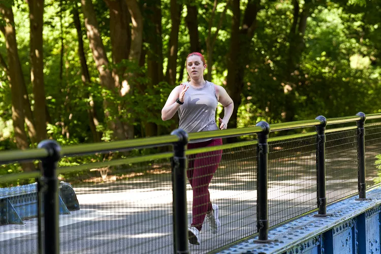

There are so many reasons why millions of people around the globe enjoy running. Whether training for a race or running miles for fun, running is good for your body and mind and requires practically no equipment. All you need is a comfortable pair of running shoes (and depending on the weather, perhaps a running jacket) and the willingness to get started.
Running may seem so simple that preparing a new routine around the sport may sound silly. But by learning a few basics—such as the different types of running and various gear options—you can increase your enjoyment and make your training more effective.
From the benefits of running to the gear, nutrition, and proper form that will help you get started running and keep you safe and injury-free, this beginner's guide to running will have you taking strides in no time.
Most people who run casually do it for the physical, social, and mental benefits. Running is one of the most effective ways to build cardiovascular endurance. By running outdoors, you benefit from exposure to nature, which can reduce stress, relieve anxiety, and boost your mood.[1]
When you're looking at how to start running, there is a low entry bar—you don't need fancy equipment, it's relatively inexpensive and you can do it almost anywhere. It's also an activity that spans ages; it's never too late to start running. Many people who have taken up the sport do so in their 50s, 60s, and even 70s.
Running is an activity that can bring families together. For example, some families participate in charity fun runs or jog together to spend quality time enhancing healthy values. Kids participating in running programs may learn how to overcome obstacles and persevere.
The only items you need to start running every day include a pair or two of running shoes and socks. You may want to alternate between two pairs of shoes in case one gets wet or muddy.
You’ll also need sweat-resistant running clothes like shorts and T-shirts. If you run at night or in the early morning, get a reflective vest or light for safety.
How often you run each week should depend on your goals and physical fitness level. For example, if you’re a beginner, you don’t need to start out running every day because you’re at a higher risk of burnout or injury. Instead, start by running every other day for 20–30 minutes. Consider trying a couch-to-5K program to start.
Fitting in enough time to run daily or several times a week can be a challenge. Try to run first thing in the morning before your day gets busy. Or, run during your lunch break. Look for run clubs and running meetups in your area for support and motivation. Do short runs during the week, and save your long runs for the weekends when you have more time.
If you’re an experienced runner and plan to run every day, it’s important to schedule your weekly training with plenty of variety. For example, one day a week you could do a long run at your goal race pace. You could spend another day on speed work. One to two days could be short, recovery runs. The other days can be spent doing a hill workout, where you run up an incline repetitively to build up strength in your legs. You also can run or jog in a pool for an active recovery.
This is an example of a sample 10K training plan for an advanced runner:
| Monday | Tuesday | Wednesday | Thursday | Friday | Saturday | Sunday |
|---|---|---|---|---|---|---|
| 3-mile run | 30-minute tempo run | 6 × 400 meters at mile pace | 3-mile run | Rest or 3-mile run | 5-mile run | 6-mile run |
FitNest Hub
Be sure to stick to well-lit, populated areas when you run. Look for popular running paths and trails in your area. Wear bright colors and a reflective vest if you run at night or early in the morning. You can also run laps on a track or do your speed work there. Watch out for branches and sticks when running on trails. They’re a tripping hazard and can cause an injury.
You don’t always need to stretch before you run. You can walk the first few minutes or jog at a slower pace to warm up your muscles. After your run, always stretch out.
Running just a few minutes each day may benefit your health. Research shows it may even extend your life. But do you need to run every day of the week to benefit? No.
Remember, even elite runners stay injury free by scheduling in rest days and cross training days. Try lower-impact activities like swimming and cycling on cross-training days to recover and give your hard-working running muscles a break.
If you aren’t sure how often to exercise or whether it’s safe for you to start running, talk to your doctor. They can recommend a physical fitness program that’s appropriate for your age and fitness level.